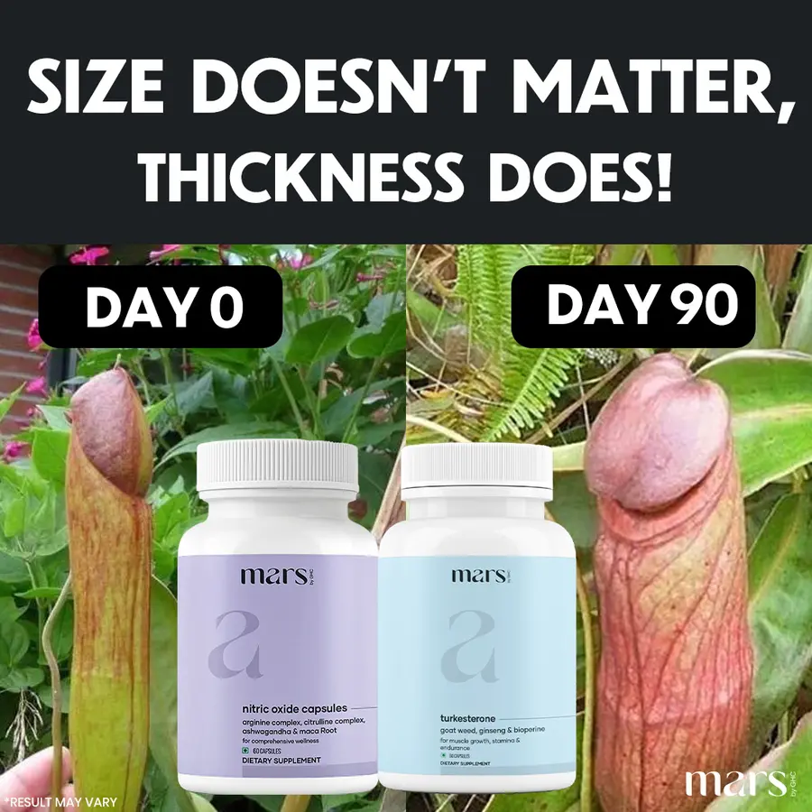
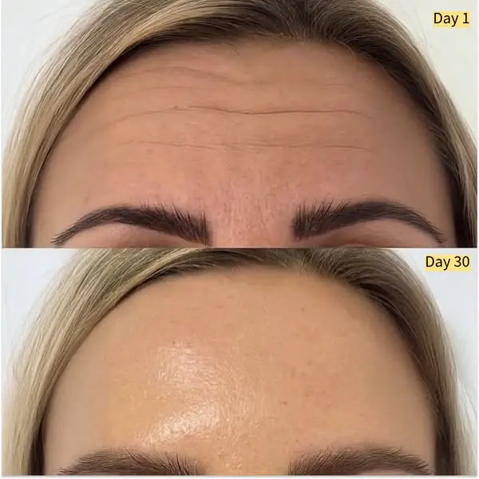
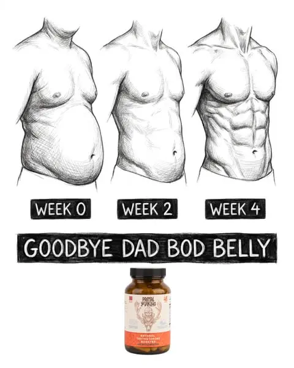
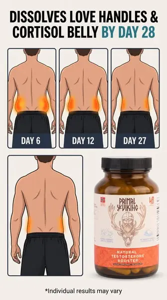
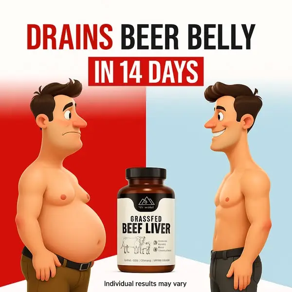
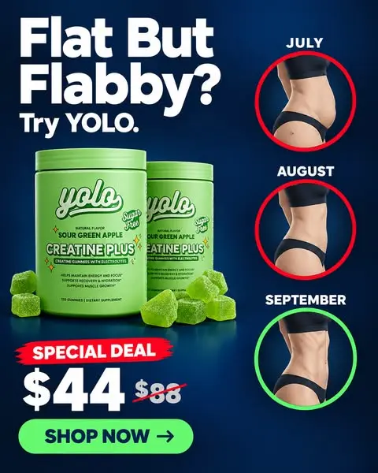

Gate 2 — concept family 2: before-after / timeline (8 templates)
Step 2 of the Blueprint for Edenvia, angle A8. Same method as family 1: each template from Adrien's swipe file is decoded and cloned 1:1 onto the Molecular Hydrogen pouch — same structure, same slot count, same production method, and where Adrien's own run on the template was corrected by a Loom, the corrected version is the one we copy. Briefed while the VPS generates family 1: these briefs are retouched against the Loom-1 rules before they are generated.
The 8 ads

EDENVIA_B01_C0126_V1 · A8-L heavy, swollen legs — 'the scale doesn't matter, swollen legs do'
THE SCALE DOESN'T MATTER, SWOLLEN LEGS DO!
Why it wins: A black band shouting a 'X doesn't matter, Y does!' twist over two photos that look identical at first glance until the day tags make you compare them — the eye hunts for the difference.
Our scene: two near-identical nature photos with a before/after reading; ours = the same sandals, the same feet, the same floor, two days apart: strap biting into a puffy ankle vs strap loose on a slim ankle
Equivalent: pitcher plant (swollen → thick) ↔ ankle and calf (swollen → slim); two rival bottles pasted at the bottom ↔ our pouch + a clear glass with the tablet fizzing, same spot, same scale · method: real photo + pasted product
Adrien's run-1 kept this template with 'Size doesn't matter… unless it's your belly!' after Loom 2 said the first twist was not logical; ours keeps the formula and names the real problem.
Text slots (4) — theirs → ours
| slot | template | Edenvia |
|---|---|---|
| headline | SIZE DOESN'T MATTER, THICKNESS DOES! | THE SCALE DOESN'T MATTER, SWOLLEN LEGS DO! |
| tag_left | DAY 0 | DAY 0 |
| tag_right | DAY 90 | DAY 30 |
| disclaimer | *RESULT MAY VARY | *RESULTS MAY VARY |
Visual swaps
- headline_band · SWAP: black band, 'THE SCALE DOESN'T MATTER, / SWOLLEN LEGS DO!' — copy formula '[X] doesn't matter, [Y] does!' — our wrong metric vs our real problem (B2 plain words)
- left_photo · SWAP: side view of a woman's feet in flat strappy sandals on a tiled floor, DAY 0: puffy ankle, strap pressing a groove into the skin, sock line visible — before panel = the problem, same framing as the right
- right_photo · SWAP: same feet, same sandals, same floor, DAY 30: slim ankle, strap loose, ankle bone visible — after panel; 30 days = one pouch
- product_spot · SWAP: the Edenvia pouch (Image 1) pasted centre-bottom, slightly left, with a clear glass of water and a white effervescent tablet fizzing beside it, same height as the bottles — one product; the glass fills the second bottle's spot
- logo · SWAP: small Edenvia wordmark bottom-right (logo file) — same spot
EDENVIA_B01_C0193_V1 · A8-M the man's belly that isn't fat — he blames the beer, it's fluid
Only one of them is pregnant.
Why it wins: Two round bellies in profile almost touching — a pregnant woman's and a man's — and the only line on the image is 'Only one of them is pregnant.' The joke lands before the brand does.
Our scene: a profile shot of two bellies side by side, same height, same roundness; ours identical: the pregnant woman in a white cardigan and bra top, the man in an open white shirt and jeans, hands in pockets
Equivalent: none needed — the man's belly is our A8-M subject as is; the product only appears as a small pouch · method: real photo + pasted product
Text slots (1) — theirs → ours
| slot | template | Edenvia |
|---|---|---|
| headline | (Adrien) Only one of them is pregnant. | Only one of them is pregnant. |
Visual swaps

EDENVIA_B01_C0228_V1 · A8-F puffy face and jawline — fluid the body stopped moving, not weight
(no headline — day tags only)
Why it wins: Two stacked phone close-ups of the same face, no headline, just 'Day 1' and 'Day 30' chips — it reads as a friend's photo, not an ad, and the eye compares the two frames on its own.
Our scene: top panel = the problem close-up, bottom panel = the same framing 30 days later; ours = the lower face: cheek, jawline, chin and neck of the same woman, same light, same blonde hair falling the same way
Equivalent: forehead ↔ jawline and chin (our A8-F body part): top puffy, soft, no jaw edge; bottom defined jawline, visible chin line · method: real photo
Text slots (2) — theirs → ours
| slot | template | Edenvia |
|---|---|---|
| tag_top | Day 1 | Day 1 |
| tag_bottom | Day 30 | Day 30 |
Visual swaps
- top_panel · SWAP: close-up of the lower face of woman 40–55, soft midlife build, ordinary clothes, a puffy face: soft cheeks, no jaw edge, slight double chin — never a young fitness model, Day 1 — before = our body part
- bottom_panel · SWAP: same woman, same crop, Day 30: defined jawline, chin line visible, cheeks lifted — after; 30 days = one pouch

EDENVIA_B01_C0325_V1 · A8-M the man's belly that isn't fat — the keg that no diet moved
GOODBYE KEG BELLY
Why it wins: Three hand-drawn torsos in a row — soft, softer, flat — with WEEK 0 / WEEK 2 / WEEK 4 chalk labels and a chalkboard banner saying goodbye to the belly. Looks like a doctor's sketch, not an ad.
Our scene: three stages of the same body left to right; ours = the same man's torso, belly over the waistband at week 0, less round at week 2, flat (not muscular) at week 4
Equivalent: six-pack at week 4 ↔ a flat, normal 50-year-old torso at week 4 (our avatar never gets abs); amber bottle ↔ pouch · method: illustration + pasted product
Same file as c0330 in Adrien's library (identical bytes) — he ran it twice with two angles; we do the same: c0325 = A8-M belly, c0330 = A8-L legs.
Text slots (2) — theirs → ours
| slot | template | Edenvia |
|---|---|---|
| labels | WEEK 0 · WEEK 2 · WEEK 4 | WEEK 0 · WEEK 2 · WEEK 4 |
| banner | GOODBYE DAD BOD BELLY | GOODBYE KEG BELLY |
Visual swaps
- sketch_row · SWAP: three pencil torsos of the same man (man 45–60, greying, soft midlife build, belly over the belt, ordinary T-shirt or button shirt — never a fitness model): belly over the waistband / less round / flat and normal — no abs — our avatar's realistic result
- banner · SWAP: 'GOODBYE KEG BELLY' — copy formula 'GOODBYE [problem]'; 'keg' = the A8-M bank word (B2)
- product_spot · SWAP: the Edenvia pouch centred under the banner, same height — placement (A8)

EDENVIA_B01_C0330_V1 · A8-L heavy, swollen legs she hides under long trousers
HEAVY LEGS? DON'T HIDE THEM — DRAIN THEM.
Why it wins: Same anatomy-sketch timeline as c0325, but on the legs: three pairs of calves and ankles, swollen to slim, WEEK 0 / 2 / 4, and a chalk banner that tells her to stop hiding them.
Our scene: three stages of the same legs left to right, seen from the front, mid-shin down to the feet: week 0 thick ankles with a sock groove, week 2 softer, week 4 slim with the ankle bone drawn
Equivalent: chest ↔ calves and ankles; amber bottle ↔ pouch · method: illustration + pasted product
Identical source file to c0325 (same bytes); second use with the legs angle, as Adrien ran it twice.
Text slots (2) — theirs → ours
| slot | template | Edenvia |
|---|---|---|
| labels | WEEK 0 · WEEK 2 · WEEK 4 | WEEK 0 · WEEK 2 · WEEK 4 |
| banner | MAN BOOBS? DON'T HIDE — MELT THEM. | HEAVY LEGS? DON'T HIDE THEM — DRAIN THEM. |
Visual swaps
- sketch_row · SWAP: three pencil pairs of lower legs of the same woman, front view, mid-shin to feet: swollen with a sock groove / softer / slim with the ankle bone — our body part
- banner · SWAP: 'HEAVY LEGS? DON'T HIDE THEM — DRAIN THEM.' — same structure '[problem]? DON'T HIDE — [verb] THEM.'; our verb is drain (M1), bank: 'heavy legs' (B2)
- product_spot · SWAP: Edenvia pouch centred under the banner — placement

EDENVIA_B01_C0331_V1 · A8-L heavy, swollen legs drained by day 30
DRAINS HEAVY, SWOLLEN LEGS BY DAY 30
Why it wins: A four-panel medical-poster timeline: three small back-view figures with an orange glow on the problem area shrinking DAY 6 → 12 → 27, then one big clean result panel next to the product. The glow tells the story without a word.
Our scene: three small cards left to right, same figure from behind, glow shrinking; one large card below with the result and the product; ours = the back of a woman's lower legs (calves, ankles, heels) in the same cards, glow on the calves and ankles
Equivalent: love handles (back view, waist) ↔ calves and ankles (back view, knee down); amber bottle bottom-right ↔ pouch bottom-right, never squashed (Adrien Loom 2: jar squashed → redo) · method: illustration + pasted product
Adrien's 5-round template: jar squashed (L2) → more colour on the result (L3) → keep the small glow on the result (L4) → 'great' (L5). Our first try applies all three lessons.
Text slots (3) — theirs → ours
| slot | template | Edenvia |
|---|---|---|
| headline | DISSOLVES LOVE HANDLES & CORTISOL BELLY BY DAY 28 | DRAINS HEAVY, SWOLLEN LEGS BY DAY 30 |
| labels | DAY 6 · DAY 12 · DAY 27 | DAY 6 · DAY 12 · DAY 27 |
| footnote | *Individual results may vary | *Individual results may vary |
Visual swaps
- headline · SWAP: 'DRAINS HEAVY, SWOLLEN LEGS / BY DAY 30' ('BY DAY 30' in Edenvia accent blue) — copy formula '[verb] [problem] BY DAY [n]'; our verb drain, bank 'swollen legs' (B2); 30 days = one pouch
- small_panels · SWAP: three back views of a woman's lower legs (knee to heel), orange glow on calves and ankles shrinking, DAY 6 / DAY 12 / DAY 27 — our body part; template numbers kept
- result_panel · SWAP: large back view of the same legs, slim, with a small faint glow still on the ankles — Adrien Loom 4: the result keeps a small glow — their visual code
- product_spot · SWAP: Edenvia pouch bottom-right, same size, true proportions, never squashed — placement; Loom 2 lesson on this template

EDENVIA_B01_C0379_V1 · A8-M the man's belly that isn't fat — it drains, it doesn't burn
DRAINS THE BELLY THAT ISN'T FAT
Why it wins: A cartoon man, belly out and frowning on a red half, faces his own slim grinning self on a blue half, under a headline that says the product DRAINS the belly in a number of days. Loud, simple, kid-show colours.
Our scene: same man, before on red (left, sad, belly over the belt), after on blue (right, smiling, flat), product between them; ours identical with our avatar and our pouch
Equivalent: beer belly ↔ the same belly (A8-M); amber bottle ↔ pouch; 14 days ↔ 30 days · method: Pixar/3D cartoon regeneration
Text slots (3) — theirs → ours
| slot | template | Edenvia |
|---|---|---|
| headline | DRAINS BEER BELLY | DRAINS THE BELLY THAT ISN'T FAT |
| deadline | IN 14 DAYS | IN 30 DAYS |
| footnote | Individual results may vary | Individual results may vary |
Visual swaps
- headline · SWAP: red 'DRAINS' + black 'THE BELLY THAT ISN'T FAT' — their verb is our mechanism; A8-M bank 'belly that isn't fat' (B2)
- deadline_box · SWAP: red box 'IN 30 DAYS' — template carries a deadline (B6); our supply
- left_figure · SWAP: same style, man 45–60, greying, soft midlife build, belly over the belt, ordinary T-shirt or button shirt — never a fitness model as a Pixar character, belly over the belt, frowning — our avatar
- right_figure · SWAP: the same character, flat soft belly (not athletic), smiling — realistic after
- product_spot · SWAP: Edenvia pouch centre-bottom, same size; a small clear glass with a fizzing tablet at its foot — placement

EDENVIA_B01_C0381_V1 · A8-L swollen legs on an otherwise slim body — 'Swollen legs? Try Edenvia.'
Slim Body, Swollen Legs? Try EDENVIA.
Why it wins: A big 'Problem? Try us.' headline next to the product, and three circles stacked on the right — red ring, yellow ring, green ring — showing the same body part across three months, with a crossed-out price and a green SHOP NOW. The traffic-light rings do the convincing.
Our scene: left: headline over the product; right: three circles JULY / AUGUST / SEPTEMBER; bottom: SPECIAL DEAL, price, button; ours identical with calves and ankles in the circles
Equivalent: two tubs + scattered gummies ↔ one pouch + a clear glass with the tablet fizzing and two white effervescent tablets on the surface; waist crops ↔ calf/ankle crops in profile · method: collage
Text slots (5) — theirs → ours
| slot | template | Edenvia |
|---|---|---|
| headline | Flat But Flabby? Try YOLO. | Slim Body, Swollen Legs? Try EDENVIA. |
| months | JULY · AUGUST · SEPTEMBER | JULY · AUGUST · SEPTEMBER |
| deal_tag | SPECIAL DEAL | SPECIAL DEAL |
| price | $44 $88 | $39.00 $79.99 |
| button | SHOP NOW → | SHOP NOW → |
Visual swaps
- headline · SWAP: 'Slim Body, / Swollen Legs? / Try EDENVIA.' — Adrien's final structure '[Problem]? Try [brand].'; bank 'swollen legs' (B2)
- product_spot · SWAP: one Edenvia pouch with a clear glass of water beside it, a white effervescent tablet fizzing, two tablets on the surface — one product + its ritual fills the two-tub footprint
- circles · SWAP: three ring crops of the same woman's calves and ankles in profile: swollen (red ring) / less (yellow) / slim (green), same month labels — our body part; Adrien kept the month labels
- price · SWAP: '$39.00' with crossed '$79.99' — our DTC price and compare-at (brand.json prices_allowed)
Where things stand
- 18 briefs committed in
edenvia/briefs/(families 1–2), templates inedenvia/batch/templates/, plan §8.2–§8.3 inedenvia/batch/B01-clone-plan.md. - The VPS session generates family 1 only (gate 2). Family 2 waits for the rules from your first Loom, then is generated in the same way ($30 round).
- Open question for Loom 1: on native-look ads with no product in the template (c0228), do you want a small pouch added or none, like the template?